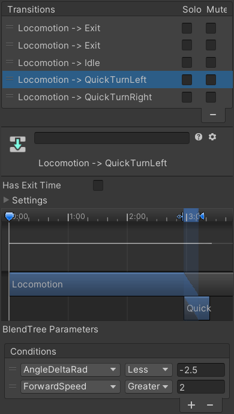

This page is part of the 3D Game Kit sample.
Mecanim
Like Movement, turning is also handled in several steps every frame:
// PlayerController.cs:
void FixedUpdate()
{
...
SetTargetRotation();
if (IsOrientationUpdated() && IsMoveInput)
UpdateOrientation();
...
}
It's unclear why SetTargetRotation gets called every update instead of only when the character is able to turn and trying to do so. Moving it inside the if block with UpdateOrientation seems to make no difference to the character's behaviour and would make more logical sense.
Mecanim Determine Desired Turn
PlayerController.FixedUpdate calls SetTargetRotation which gets the desired movement from the PlayerInput script and calculates the rotation the character would need to face that direction:
// PlayerController.cs:
void SetTargetRotation()
{
// Create three variables, move input local to the player, flattened forward direction of the camera and a local target rotation.
Vector2 moveInput = m_Input.MoveInput;
Vector3 localMovementDirection = new Vector3(moveInput.x, 0f, moveInput.y).normalized;
Vector3 forward = Quaternion.Euler(0f, cameraSettings.Current.m_XAxis.Value, 0f) * Vector3.forward;
forward.y = 0f;
forward.Normalize();
Quaternion targetRotation;
// If the local movement direction is the opposite of forward then the target rotation should be towards the camera.
if (Mathf.Approximately(Vector3.Dot(localMovementDirection, Vector3.forward), -1.0f))
{
targetRotation = Quaternion.LookRotation(-forward);
}
else
{
// Otherwise the rotation should be the offset of the input from the camera's forward.
Quaternion cameraToInputOffset = Quaternion.FromToRotation(Vector3.forward, localMovementDirection);
targetRotation = Quaternion.LookRotation(cameraToInputOffset * forward);
}
// The desired forward direction of Ellen.
Vector3 resultingForward = targetRotation * Vector3.forward;
// If attacking try to orient to close enemies.
if (m_InAttack)
{
// Find all the enemies in the local area.
Vector3 centre = transform.position + transform.forward * 2.0f + transform.up;
Vector3 halfExtents = new Vector3(3.0f, 1.0f, 2.0f);
int layerMask = 1 << LayerMask.NameToLayer("Enemy");
int count = Physics.OverlapBoxNonAlloc(centre, halfExtents, m_OverlapResult, targetRotation, layerMask);
// Go through all the enemies in the local area...
float closestDot = 0.0f;
Vector3 closestForward = Vector3.zero;
int closest = -1;
for (int i = 0; i < count; ++i)
{
// ... and for each get a vector from the player to the enemy.
Vector3 playerToEnemy = m_OverlapResult[i].transform.position - transform.position;
playerToEnemy.y = 0;
playerToEnemy.Normalize();
// Find the dot product between the direction the player wants to go and the direction to the enemy.
// This will be larger the closer to Ellen's desired direction the direction to the enemy is.
float d = Vector3.Dot(resultingForward, playerToEnemy);
// Store the closest enemy.
if (d > k_MinEnemyDotCoeff && d > closestDot)
{
closestForward = playerToEnemy;
closestDot = d;
closest = i;
}
}
// If there is a close enemy...
if (closest != -1)
{
// The desired forward is the direction to the closest enemy.
resultingForward = closestForward;
// We also directly set the rotation, as we want snappy fight and orientation isn't updated in the UpdateOrientation function during an atatck.
transform.rotation = Quaternion.LookRotation(resultingForward);
}
}
// Find the difference between the current rotation of the player and the desired rotation of the player in radians.
float angleCurrent = Mathf.Atan2(transform.forward.x, transform.forward.z) * Mathf.Rad2Deg;
float targetAngle = Mathf.Atan2(resultingForward.x, resultingForward.z) * Mathf.Rad2Deg;
m_AngleDiff = Mathf.DeltaAngle(angleCurrent, targetAngle);
m_TargetRotation = targetRotation;
}
That method is far too long so most of it should have been split into separate methods: CalculateTargetRotation and UpdateAttackTurning, with only the last few lines remaining in SetTargetRotation itself. In particular, that would cut an entire page worth of code out of the main method which is only relevant when the character is attacking.
Mecanim Can Turn
Then it checks if (IsOrientationUpdated() && IsMoveInput) to determine whether the Animator Controller is in a state that allows turning and the player is actually trying to move.
// PlayerController.cs:
bool IsOrientationUpdated()
{
bool updateOrientationForLocomotion = !m_IsAnimatorTransitioning && m_CurrentStateInfo.shortNameHash == m_HashLocomotion || m_NextStateInfo.shortNameHash == m_HashLocomotion;
bool updateOrientationForAirborne = !m_IsAnimatorTransitioning && m_CurrentStateInfo.shortNameHash == m_HashAirborne || m_NextStateInfo.shortNameHash == m_HashAirborne;
bool updateOrientationForLanding = !m_IsAnimatorTransitioning && m_CurrentStateInfo.shortNameHash == m_HashLanding || m_NextStateInfo.shortNameHash == m_HashLanding;
return updateOrientationForLocomotion || updateOrientationForAirborne || updateOrientationForLanding || m_InCombo && !m_InAttack;
}
CanTurn would have been a much better method name.
That method effectively illustrates one of the main problems with having the state machine defined separately from the code. At first it might seem useful for non-programmers to be able to set things up visually, but eventually the state machine and code end up being so strongly dependant on each other that neither one can be touched without knowing how the other works anyway. A non-programmer cannot simply look at a state in the Animator Controller and use a toggle to determine if they want that state to allow the player to control their turning because the specific states are hard coded into this method on line 397 of a 680 line script.
There are also several things that could be improved about the way that method was written:
- Many coding standards would recommend using brackets around the conditions to clarify their evaluation order. Newer programmers in particular may not realise that
&&takes priority so it will evaluate as(is not transitioning && current state is target) || next state is targetrather thanis not transitioning && (current state is target || next state is target). - Instead of repeating the same line 3 times, that condition should be separated into another method so it can just call
IsInState(m_HashLocomotion) || IsInState(m_HashAirborne) .... - All those conditions should be part of the
returnstatement (using multiple lines so they do not get too long) instead of being evaluated beforehand. That way as soon as any of the conditions is met it can return without continuing to check the rest of them. In this case the performance improvement would be negligible, but it would have also been faster to write without needing to declare any local variables.
// PlayerController.cs:
protected bool IsMoveInput
{
get { return !Mathf.Approximately(m_Input.MoveInput.sqrMagnitude, 0f); }
}
That property also has a few things worth noting:
- It should be in the
PlayerInputclass rather thanPlayerControllersince the only thing it does is check input. - A more descriptive name like
IsTryingToMovewould be better. - The use of
Mathf.Approximatelyprovides a "dead zone" where a small amount of tilt on a joystick will count as none, but the size of that zone is so small that it will be totally useless. Unity'sInput.GetAxismethod already accounts for a dead zone which can be customised in the project's Input Settings. In this project the dead zone is set to 0.19 which is several orders of magnitude larger than the valueMathf.Approximatelyuses. - Unity's
Vector2 ==operator also already has a dead zone built in (see its source code below). But again, that dead zone is too small to have any practical use so it actually tends to cause more problems than it solves.
public static bool operator ==(Vector2 lhs, Vector2 rhs)
{
return (lhs - rhs).sqrMagnitude < 9.99999944E-11f;
}
Mecanim Apply Turn
If those conditions are both true, it calls PlayerController.UpdateOrientation which sets the AngleDeltaRad parameter (the angle between the current rotation and desired rotation in radians) in the Animator Controller and rotates the character towards the desired rotation.
// PlayerController.cs:
void UpdateOrientation()
{
m_Animator.SetFloat(m_HashAngleDeltaRad, m_AngleDiff * Mathf.Deg2Rad);
Vector3 localInput = new Vector3(m_Input.MoveInput.x, 0f, m_Input.MoveInput.y);
float groundedTurnSpeed = Mathf.Lerp(maxTurnSpeed, minTurnSpeed, m_ForwardSpeed / m_DesiredForwardSpeed);
float actualTurnSpeed = m_IsGrounded ? groundedTurnSpeed : Vector3.Angle(transform.forward, localInput) * k_InverseOneEighty * k_AirborneTurnSpeedProportion * groundedTurnSpeed;
m_TargetRotation = Quaternion.RotateTowards(transform.rotation, m_TargetRotation, actualTurnSpeed * Time.deltaTime);
transform.rotation = m_TargetRotation;
}
Mecanim Quick Turns
The Locomotion Blend Tree state has a pair of transitions to quick turn animations that get triggered when the character is moving fast enough and tries to turn sharply.

It's unclear why the angles are converted to radians since most people have a much better understanding of degrees. The 2.5 radian threshold is equal to roughly 143 degrees.
The OnAnimatorMove method above also applies any root motion rotation from the current animation. During the quick turn animations, the IsOrientationUpdated method to returns false so the script stops turning the character while they use their root motion.
// PlayerController.cs:
void OnAnimatorMove()
{
...
m_CharCtrl.transform.rotation *= m_Animator.deltaRotation;
...
}
This setup has the same issue described in Can Turn:
- A non-programmer couldn't add these quick turn animations on their own because they require the code to calculate and set the speed and angle delta parameters.
- They also rely on the
IsOrientationUpdatedmethod to return false during these animations so thatUpdateOrientationstops rotating the character during the quick turn, leaving the animations to perform the rotation using their root motion (inOnAnimatorMove). - It's impossible to figure out what will be moving and rotating the character in any given state without going back and forth between the code and Animator Controller.
- So a system which is supposed to allow non-programmers to work without code does not actually let them do so and at the same time it convolutes the overall logic to make everything harder for the programmers as well.
Animancer
The LocomotionState script is responsible for both the regular turning and the logic to trigger the quick turn animations. This puts all the fields in one place where they are all visible in the Inspector at once instead of splitting them across two states and transitions which can only be selected one at a time to compare them manually:
// LocomotionState.cs:
[SerializeField] private LinearMixerTransition _LocomotionMixer;
[SerializeField] private ClipTransition _QuickTurnLeft;
[SerializeField] private ClipTransition _QuickTurnRight;
[SerializeField, MetersPerSecond] private float _QuickTurnMoveSpeed = 2;
[SerializeField, Degrees] private float _QuickTurnAngle = 145;
On startup we set their OnEnd callback to return to the main _LocomotionMixer state. Note how these are ClipTransitions so they will assign their OnEnd callback to their actual state every time it is played (since AnimancerState.OnEnd is cleared every time). This improves performance by avoiding the creation of a new Delegate object every time it is used.
// LocomotionState.cs:
protected virtual void Awake()
{
_QuickTurnLeft.Events.OnEnd =
_QuickTurnRight.Events.OnEnd =
() => Character.Animancer.Play(_LocomotionMixer);
}
Every FixedUpdate this state calls UpdateRotation which returns early if the _LocomotionMixer is not active (at full Weight or currently fading in) because that means the character must already be performing a quick turn, so we do not do any scripted turning and just let the Character.OnAnimatorMove apply the root motion rotation from that animation.
// LocomotionState.cs:
private void UpdateRotation()
{
if (!_LocomotionMixer.State.IsActive)
return;
The rest of the method is comprised of several steps:
Animancer Get Turn Angles
Then it gets the current rotation of the character and the desired angle according to the Character.Parameters.MovementDirection. And again it has an opportunity to return early to prevent rotation if the brain isn't actually trying to move at the moment (though that should never actually happen in this case because Character.CheckMotionState would have already changed it to the Idle state).
// LocomotionState.cs:
// In UpdateRotation:
if (!Character.Movement.GetTurnAngles(Character.Parameters.MovementDirection, out float currentAngle, out float targetAngle))
return;
// CharacterMovement.cs:
public bool GetTurnAngles(Vector3 direction, out float currentAngle, out float targetAngle)
{
if (direction == default)
{
currentAngle = float.NaN;
targetAngle = float.NaN;
return false;
}
currentAngle = transform.eulerAngles.y;
targetAngle = Mathf.Atan2(direction.x, direction.z) * Mathf.Rad2Deg;
return true;
}
Animancer Quick Turns
In the Mecanim character, the PlayerController script would calculate the forward speed and rotation needed to face the desired direction and then send those values to the Animator Controller for it to check if any transitions should be started based on those parameters. That made it difficult to figure out the actual flow of logic that would trigger the quick turn animations. But in the LocomotionState script, that same logic only takes a few lines of code which is much easier to understand.
// LocomotionState.cs:
// In UpdateRotation:
// If we're moving fast enough.
if (Character.Parameters.ForwardSpeed > _QuickTurnMoveSpeed)
{
// And turning sharp enough.
float deltaAngle = Mathf.DeltaAngle(currentAngle, targetAngle);
if (Mathf.Abs(deltaAngle) > _QuickTurnAngle)
{
// Determine which way we're turning.
ClipTransition turn = deltaAngle < 0 ? _QuickTurnLeft : _QuickTurnRight;
// Make sure the desired turn isn't already active so we do not keep using it repeatedly.
if (turn.State == null || turn.State.Weight == 0)
{
Animancer.Play(turn);
// Now that we're quick turning, we do not want to apply the scripted turning below.
return;
}
}
}
Having the logic entirely defined in code also makes it far easier to get help with. If you posted that code online, programmers would be able to easily read through it and explain the logic to you. Even if they were unfamiliar with Animancer, they could probably make an educated guess about the meaning of the last few lines. But in the Mecanim Animator Controller setup you would need to post the code along with screenshots of various parts of the Animator Controller and even then it is still hard for other people to get any real idea of how it is structured.
Animancer Apply Turn
Lastly, as long as we did not just start a quick turn animation, turn towards the direction we want to face:
// LocomotionState.cs:
// In UpdateRotation:
Character.Movement.TurnTowards(currentAngle, targetAngle, Character.Movement.CurrentTurnSpeed);
}
// CharacterMovement.cs.
public void TurnTowards(float currentAngle, float targetAngle, float speed)
{
currentAngle = Mathf.MoveTowardsAngle(currentAngle, targetAngle, speed * Time.deltaTime);
transform.eulerAngles = new Vector3(0, currentAngle, 0);
}
Note that other states such as Airborne and Attack want to use the same logic for turning but do not have quick turn animations so there is a second TurnTowards method which calls both GetTurnAngles and TurnTowards in one go for convenience.
One thing which this sample does not replicate from the Mecanim is the automatic turning towards nearby enemies while attacking in PlayerController.SetTargetRotation because this sample doesn't include enemies. But if it did, that logic would be located in the AttackState class instead of being mixed in with the general turning logic.